¿Que comida recomendamos para sus mascotas? Las siguientes:
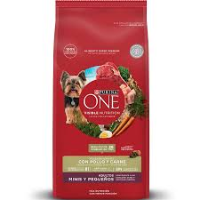 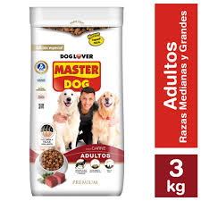 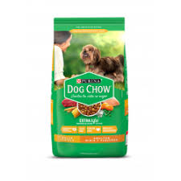
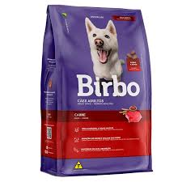
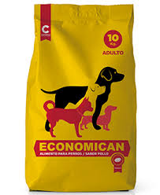
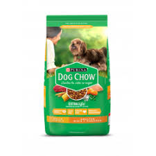
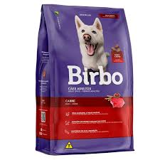
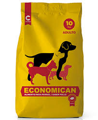
Nuestra Misión La misión de la Clínica Veterinaria Metropolitana es difundir la excelencia médica entre la profesión médico veterinaria con el objetivo de mejorar la salud y el bienestar de los animales.
Nuestra Visión Ser la clínica veterinaria de referencia y reconocida a nivel nacional por la calidad de su equipo profesional, la infraestructura y el equipamiento de primera línea. Igualmente, ofrecer servicios integrales que permitan cumplir con todas las necesidades de nuestros pacientes.
Nace hace más de tres décadas y con la idea de formar un equipo médico veterinario profesional y multidisciplinario en la atención de mascotas, comprometido con la salud y bienestar animal.
Desde 1980 apoyamos la investigación en universidades y realizamos campos clínicos para un proceso docente y formativo de los futuros profesionales médicos veterinarios. Nuestro equipo está conformado por excelentes profesionales y asistentes para ofrecerles un servicio de calidad.
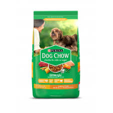
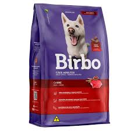
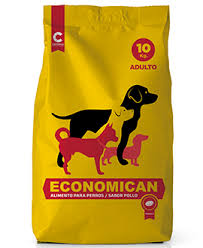
| Nombre Dueño | Apellido Dueño | Nombre Mascota | Correo | Rut | Tipo | Problema | Consulta |